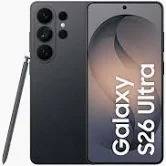
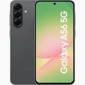

1. Samsung Galaxy S26 Ultra
Absolutny lider wydajności i król fotografii mobilnej. Wyposażony jest w procesor Snapdragon 8 Elite Gen 5 i potężny aparat 200 Mpix. Posiada również wbudowany rysik S-Pen, a także zaawansowane funkcje wspomagane sztuczną inteligencją.

ocena: 9.5/10
2. Apple iPhone 17 Pro Max
Lider w kategorii wideo i wydajności dzięki chipowi A19 Pro, wyposażony w ekran 6,9 cala i niezwykle trwałą baterię.
ocena: 9.1/10
3. Google Pixel 10 Pro XL
Wyjątkowy w kategorii fotografii mobilnej, z zaawansowanym aparatem 200 Mpix i funkcjami sztucznej inteligencji, które poprawiają jakość zdjęć.
ocena: 8.7/10
4. Samsung Galaxy A56 5G
Świetny wybór dla osób szukających dobrego telefonu w średniej półce cenowej, z solidnym aparatem i wydajnym procesorem.

ocena: 8.5/10
5. Xiaomi 17 Ultra
Telefon z doskonałym stosunkiem jakości do ceny, oferujący świetny aparat i wydajność w przystępnej cenie.
ocena: 8.0/10